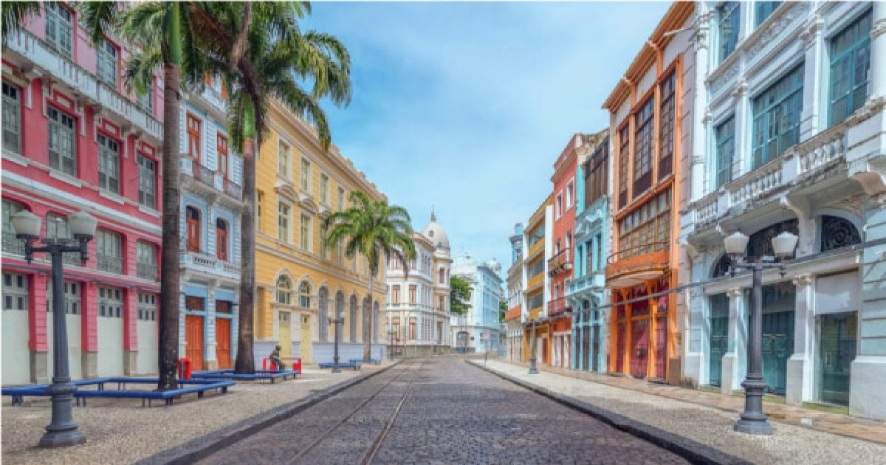
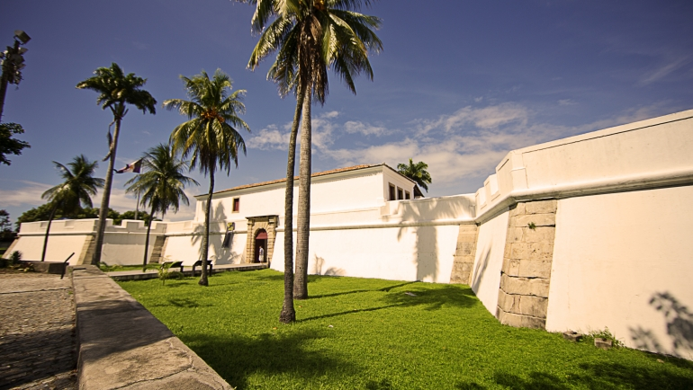

A Rua do Bom Jesus é uma das mais antigas e charmosas de Recife, no bairro do Recife também, com casarões coloridos que datam do século XVII. Foi considerada a 3ª rua mais bonita do mundo pelo Architectural Digest. Mas além da beleza, ela guarda um uma parte da história da cidade: a Sinagoga Kahal Zur Israel, a primeira das Américas, que hoje funciona como um museu sobre a presença judaica na região. O nome anterior da rua, inclusive, era Rua dos Judeus. Ainda nela, é possível aproveitar para conhecer a Embaixada dos Bonecos Gigantes, um espaço que abriga mais de 100 bonecos que desfilam no carnaval de Olinda, cidade vizinha. A rua é também conta com bares e uma feirinha sazonal.
Rua Bom Jesus
Forte das Cinco Pontas
O Forte das Cinco Pontas, no bairro de São José, é o único forte remanescente da época da ocupação holandesa em Recife, construído em 1630. Ele tem esse nome porque originalmente tinha cinco baluartes, mas hoje só restam quatro. Historicamente, a fortaleza tinha a função de defender Recife e também funcionar como uma prisão. Hoje, dentro do forte funciona o Museu da Cidade do Recife, que conta com exposições sobre a história e o patrimônio da capital pernambucana. É mais um passeio para conhecer melhor a história da povoação da cidade.